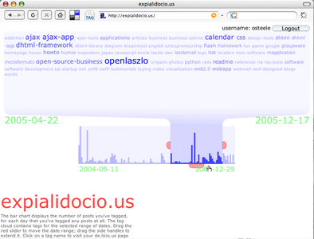

Thursday January 5 — My son made me a new logo for the application.
Thursday January 5 — John Udell posted about this application. Shamed by his posting, I went ahead and added links to the sources (rough as they are).
Wednesday January 4 — first blogged about this on the OpenLaszlo project blog.
Friday December 30 — private beta for a few co-workers.
Monday December 26 — started work (inspired by a posting by John Udell).
Expialidocio.us is a non-commercial site created by Oliver Steele. It uses the OpenLaszlo platform and the del.icio.us API to display posting histograms and time-specific tag clouds.
You can watch a screencast here.
Expialidocio.us was inspired by a posting by John Udell.
When you log in, expialidocio.us makes one request for all your del.icio.us posts. The request is proxied by the expialidocio.us proxy server; this is becauase del.icio.us doesn't have a crossdomain.xml file, so it won't speak to Flash.
From this point on, all processing is done within the Flash player on your computer.
New: The source code to expialidocio.us is available under a Creative Commons license here. The main file is cloud.lzx.
The sources are minimally commented. Check back after the weekend for more comments.